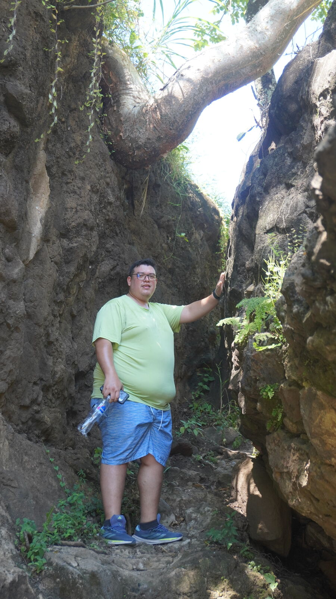
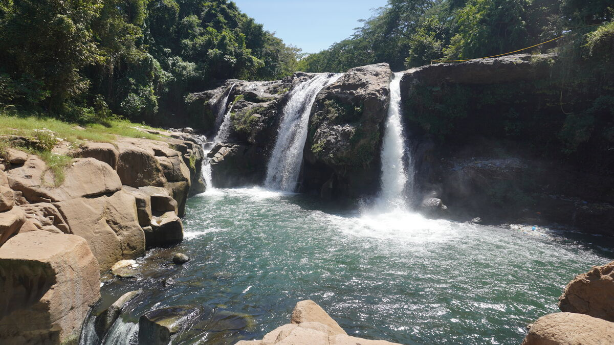
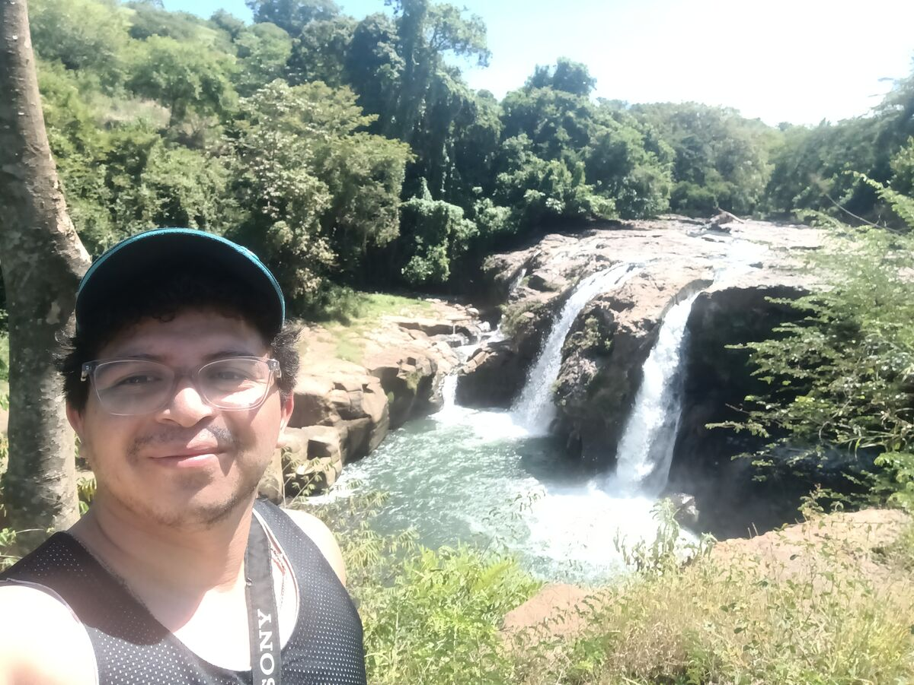
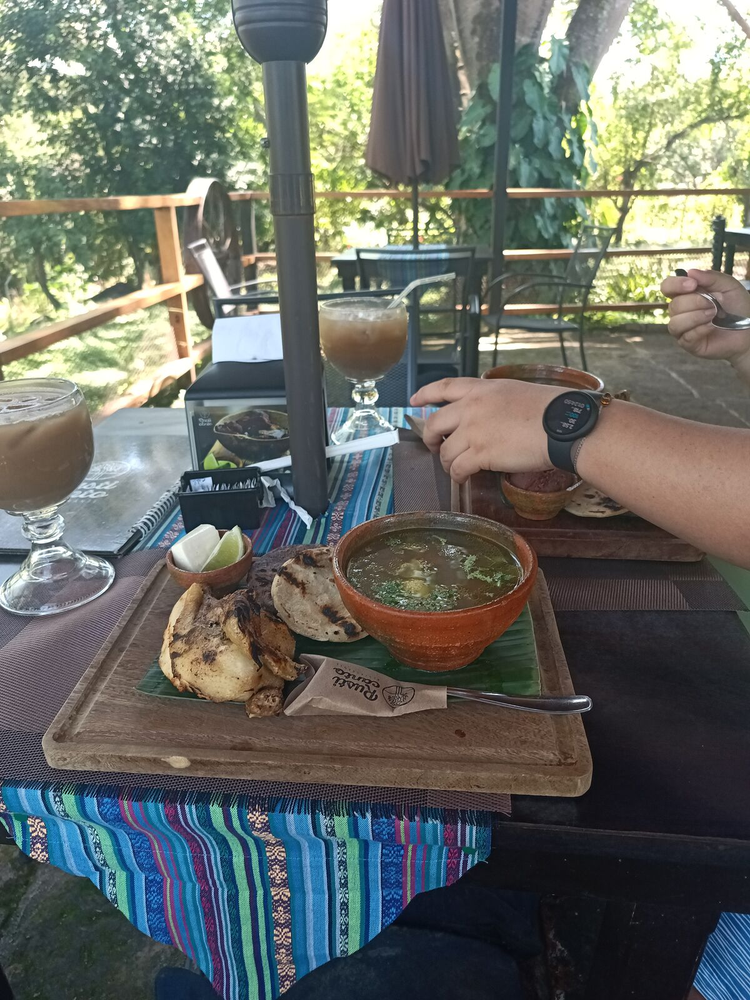
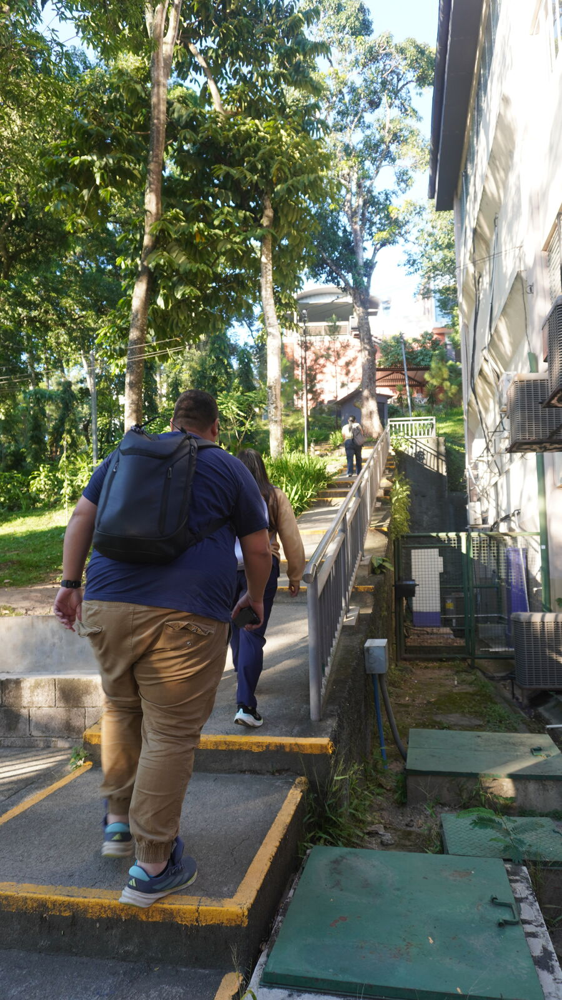
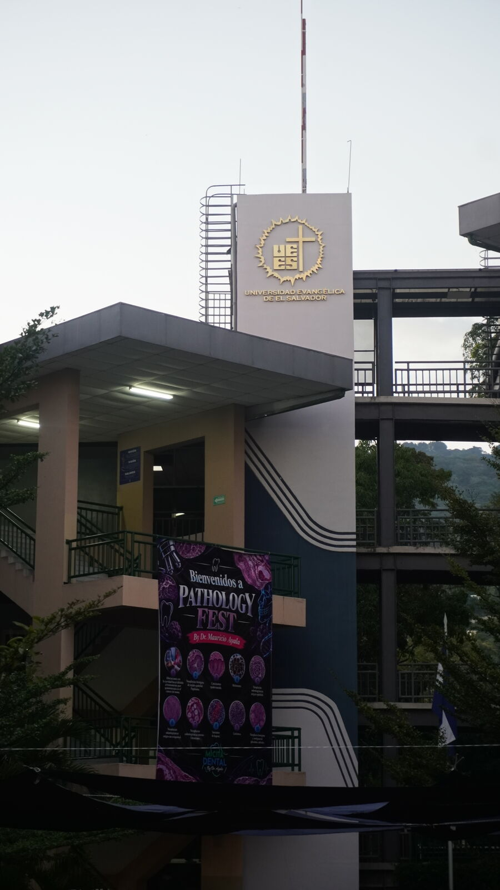
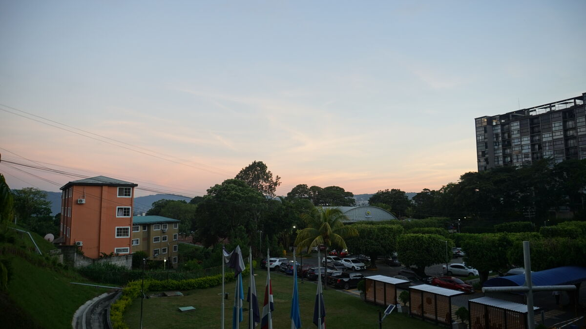

走太多路，差点丢了第一个国际合作
早上 José 已经在工作了。我用余光瞄到他，他看到我说：“你醒啦？”我说：“醒了醒了，不过才六点，还早呢”，哈哈哈哈。“兄弟，已经 9 点了”，他说。我：“啥？？？”哈哈哈哈。
我们一边吃早饭一边聊天。这趟旅行不只是为了玩，所以我开始给我在萨尔瓦多和尼加拉瓜的朋友打电话，现在我们在萨尔瓦多很可能会有合作伙伴，也在尼加拉瓜寻找其他合作。不过我们得做个计划，光凭这样是到不了的。
我们离开漂亮的 Termaland 酒店，去阿瓦查潘的 Malacatiupán 瀑布，那里美极了：看看这些照片和视频。我们在萨尔瓦多火辣辣的太阳底下单程走了大约 5 公里，就当是今天的运动。路上经过两座桥，桥下的河水很干净，不像危地马拉那样有污水的味道。
快到的时候我对 José 说：“要是收门票就太好笑了……对了，你带现金了吗？”哈哈哈。就是前一晚剩下的那两美元。他说：“没带”，哈哈哈哈哈哈。到了一看，果然收费：每人 1.50 美元。我们两个人，就是三美元：比我们某个时候的全部预算还多，而且那点预算还留在酒店里，哈哈哈哈哈。
我问收不收格查尔，保安说不收，还问那是什么东西。我求他：“您看，我们从危地马拉过来，没带美元，收格查尔吧，收三倍都行”，哈哈。可他就是不收。我们正准备回去，我又问：“那能刷卡吗？”“当然可以”，因为那里有个很漂亮的餐厅。于是我们说：“好，门票刷卡，顺便再点几份午饭。”
他们让我们进去了，我们沿着一条漂亮的小路走。先到了瀑布的上方，继续往前走……看看这美景。我想起了《塞尔达》里发现新地方的那一刻。我们从下面一个小入口钻过去，砰：壮丽的瀑布就在眼前。你们知道最棒的是什么吗？那是热水瀑布，哈哈哈。


瀑布下面不能进去，因为它像是双层瀑布；只能从上面下水，那里像一条河。于是我们爬上去，我下了水，这才发现那是一条热水河，哈哈。你们可以想象，大石头被太阳晒得滚烫，把我的脚底都烫了。不过那里有几个小水坑，我想：“哎，我就快速泡一下”，结果砰的一声差点摔倒，哈哈哈哈哈哈。José 远远地坐在树荫下，根本没注意到。还好他没看到，太丢人了，哈哈哈。

我们吃了午饭。和危地马拉一样，这里也有黑玉米饼，又好看又好吃。我点了鸡汤，José 点了一份套餐。说实话，都很好吃。

我们走回去，这下真的要出发了。路上，Kevin Chávez 帮我们联系上了萨尔瓦多福音大学（Universidad Evangélica de El Salvador）的 Miguel Chávez（两人不是亲戚，哈哈），约好下午 3 点见面。Waze 显示从我们这里过去要两个小时，按计划我们应该 1 点从酒店出发。结果失误了：我们 2 点半才出发。我很不好意思地给 Miguel 发消息：“不好意思，我们要迟到了，没想到这么远。”
最后我们还是出发了，萨尔瓦多的公路真漂亮。我们走的是一条常走的路线，果然维护得很好。
我们到了福音大学，我得说一句：这所学校真的很漂亮，非常大，有很多楼，坡还特别陡，加上几小时前我们已经走了大约 10 公里，实在不想再爬了。我们一路下到校园最低处，然后得背着背包徒步爬上去，去见 Miguel。José 走在前面，哈哈，他状态比我好，我到的时候已经气喘吁吁了，哈哈哈哈。


Miguel 非常热情地接待了我们，我们聊了将近一个小时。最后我们一致认为工程专业的学生需要：1）导师，2）机会，3）创业。而且 CHIP 方法最终应该引向创办企业、解决问题。CHIP 是我们在 Creabot 设计的项目方法，分四步：Contexto（背景，真正理解问题）、Hipótesis（假设，提出可以验证的解决方案）、Implementación（实施，把它做出来）和 Presentación（展示，把它讲清楚并为之辩护）。这次谈话可能促成 UEES 和 Hazlo Ahora 之间的合作，我们也想在尼加拉瓜寻找类似的合作。

萨尔瓦多的交通比危地马拉还糟。我们离 Airbnb 只有 2 公里，Waze 却显示要 1 小时 40 分钟，哈哈哈哈。于是我们去了一家叫 Las Cumbres 的 pupusa 店（太好吃了）：这是花得最值的 20 美元，刷卡付的，因为我们手里还是只有 2 美元现金，哈哈哈哈。吃完之后，路程从将近两小时降到了 15 分钟。要是我听 Waze 的就好了……可我偏偏迷了路，结果花了 30 分钟，哈哈哈哈。
最后我们到了，一切顺利。Airbnb 很漂亮，终于可以休息了。忙乱，但一切都好。明天做什么再看吧，不——过今天的故事就到这里。
👆 点击地图上的任意一个点，即可阅读当天的章节。